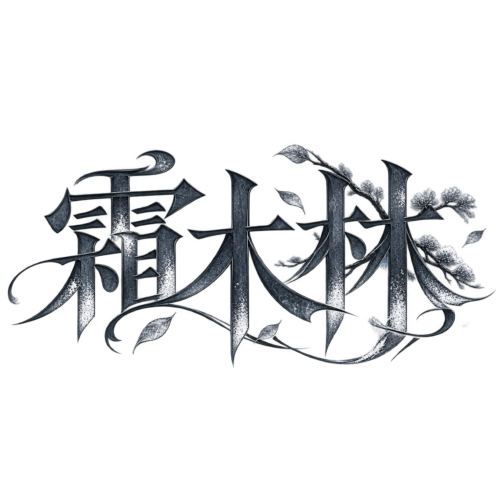

故事，都在这里。
在线翻阅，或带一本 PDF 离开。
你好，我是霜木林。
我的创作主要围绕悬疑、日常与校园。
喜欢追寻平静背后的秘密，也喜欢记录普通日子里的心动与成长。
“霜木林”这个笔名，最早来自我的小名“小林”。觉得“小林”有些简单，就从“林”字里的两个“木”，想到了“双木林”，再把“双”换成“霜”。既留着小名的来处，也让这个名字多了一点自己的特色。
希望写下的故事，能陪你度过一段安静的时光。
霜木林

在线翻阅，或带一本 PDF 离开。
我的创作主要围绕悬疑、日常与校园。
喜欢追寻平静背后的秘密，也喜欢记录普通日子里的心动与成长。
“霜木林”这个笔名，最早来自我的小名“小林”。觉得“小林”有些简单，就从“林”字里的两个“木”，想到了“双木林”，再把“双”换成“霜”。既留着小名的来处，也让这个名字多了一点自己的特色。
希望写下的故事，能陪你度过一段安静的时光。
霜木林